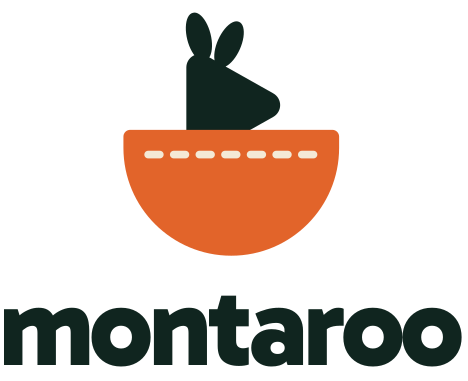
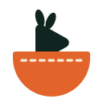
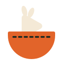
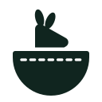
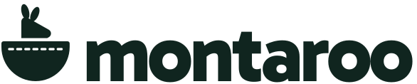
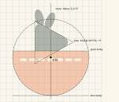
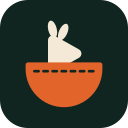

Montaroo · zestaw logo v1 · 10.11.2026
Znak zbudowany na siatce 128 × 128 (moduł 8). Najważniejsza zależność: wysokość torby = wysokość małej litery w napisie, więc „o” leżą dokładnie w pasie torby, a joey wygląda ponad linię tekstu.
Pozioma · podstawowa — strona, dokumenty, nagłówki

Pionowa — okładki, plakaty, ekran startowy

Sam znak

Znak na ciemnym

Jednokolorowy ciemny — druk 1 kolor, grawer

Jednokolorowy jasny

Pozioma na ciemnym

Jednokolorowa na ochrze — gdy tło jest w kolorze marki
Wokół logo zostaw co najmniej wysokość torby (= wysokość litery „o”). Nic nie wchodzi w zakreskowane pole.

Konstrukcja — torba: półkole R 48 + pas 8; play: zaokrąglony trójkąt (r 6) schowany do 1/4 w torbie; uszy: elipsy 5,2 × 11 pochylone −14° i +24°
